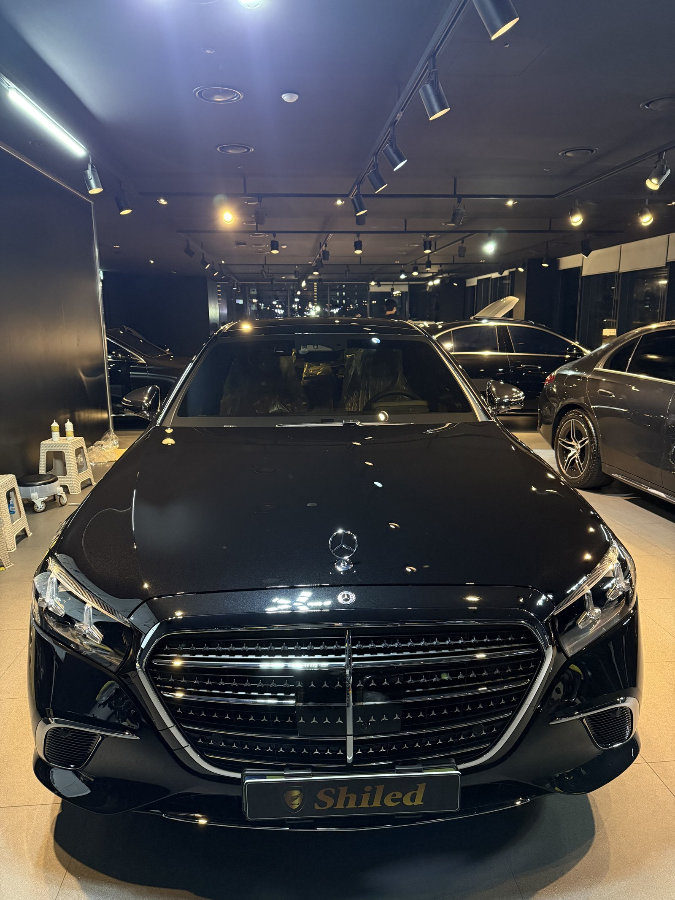
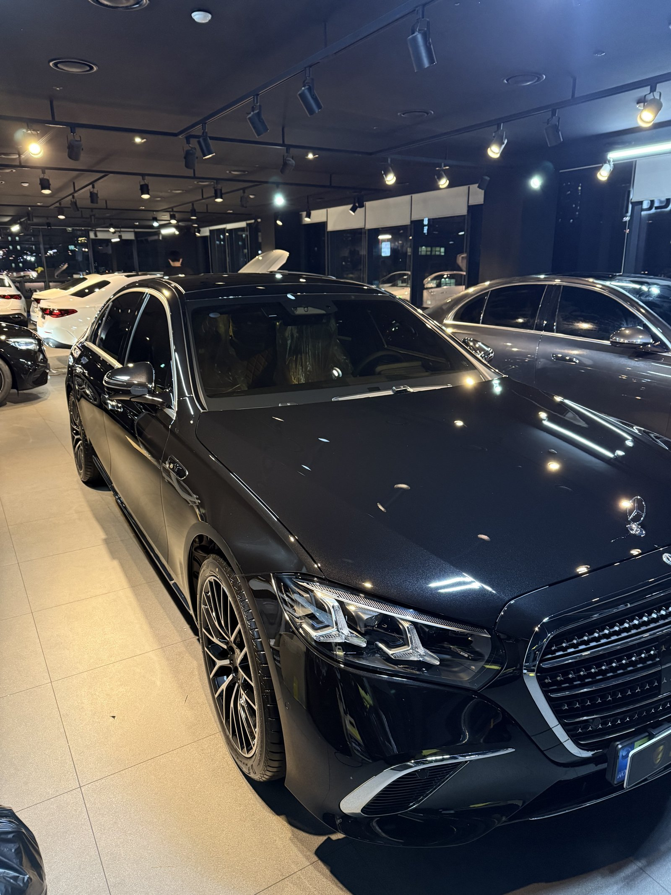
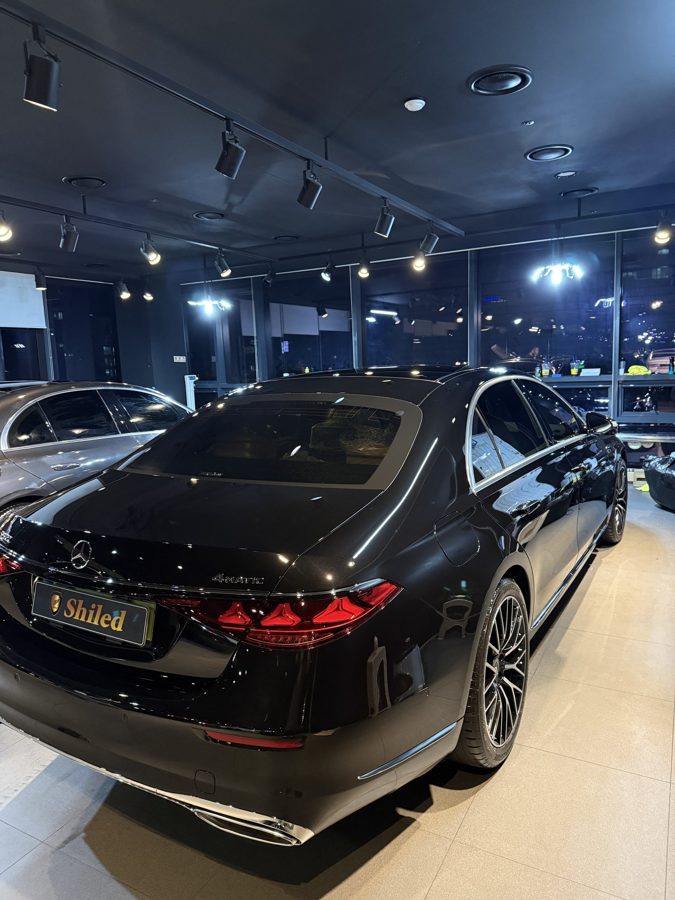
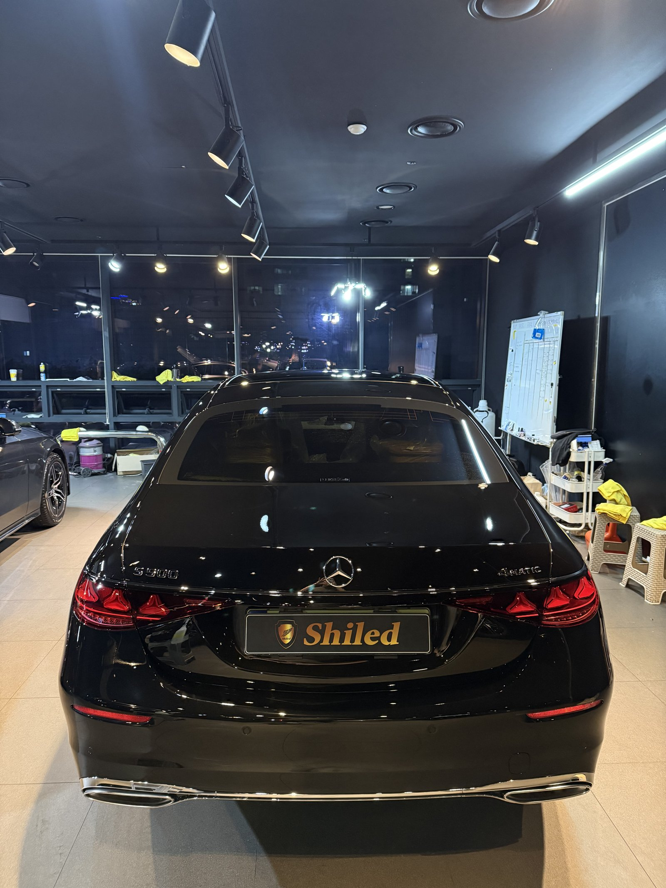
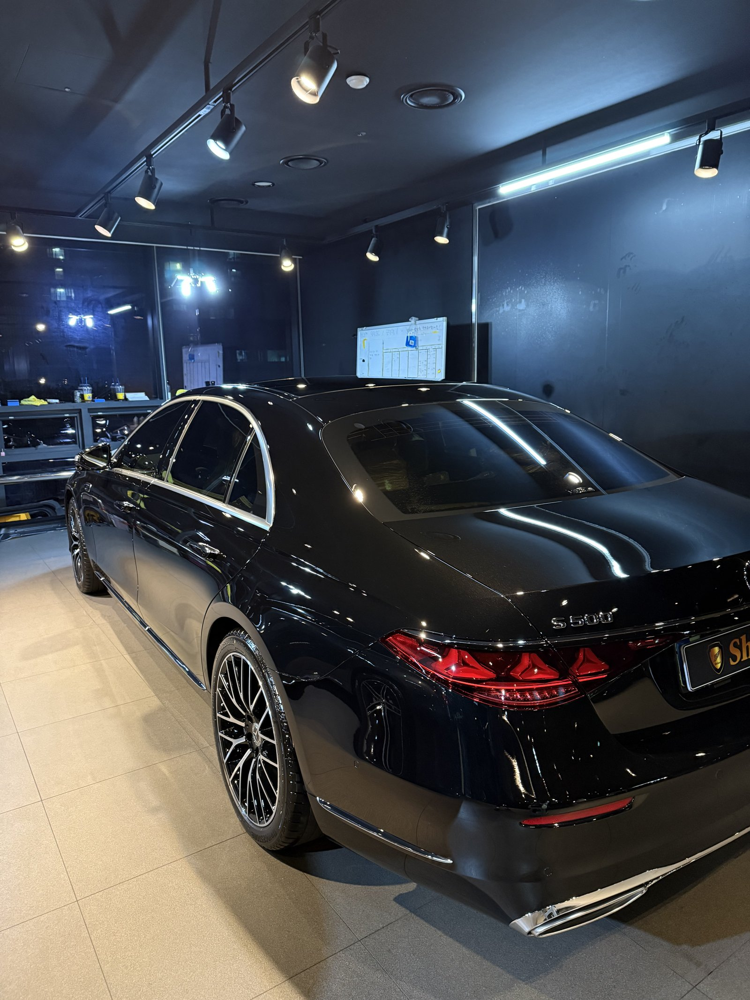
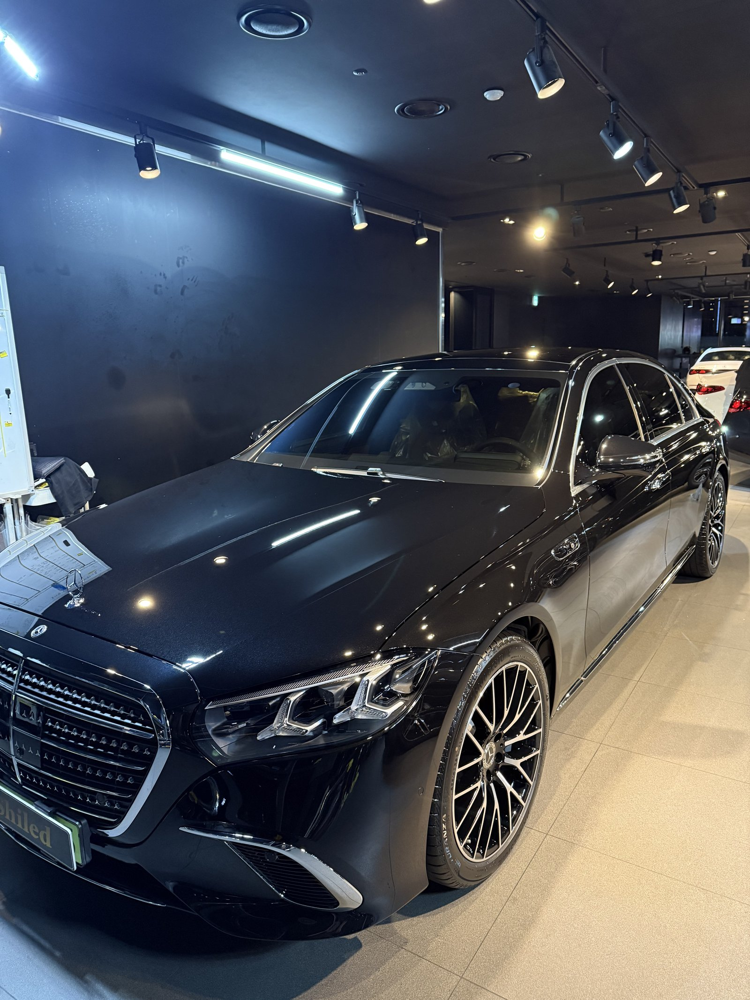
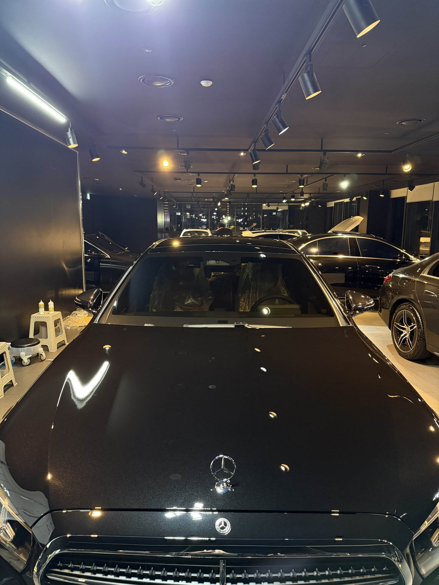
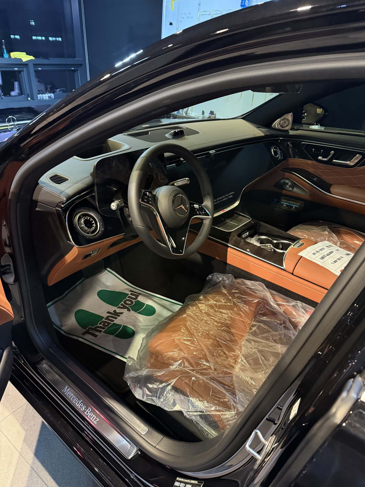
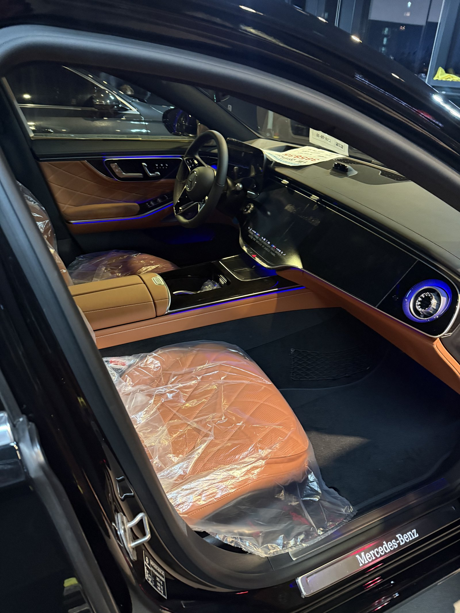
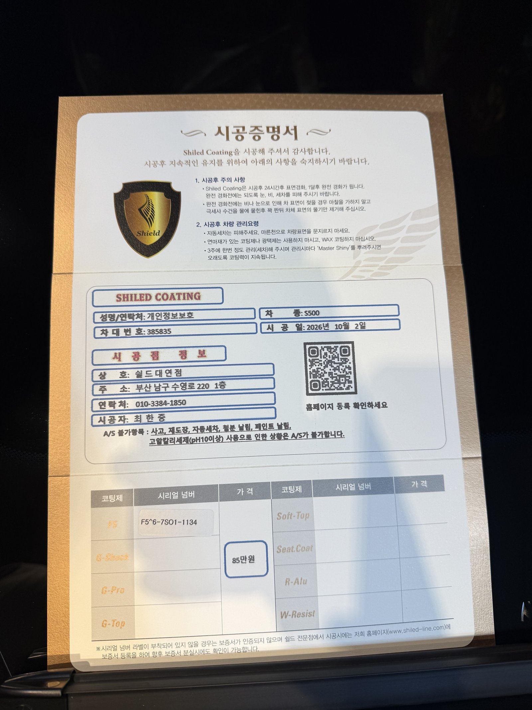

벤츠 S500, 검정 신차입니다.
실내는 새들 브라운 가죽이라 검정 외장과 대비가 분명합니다.
같은 날 S450 검정도 함께 작업했는데, 이 차는 해가 진 뒤 마무리를 봤습니다.
부산 유리막코팅 작업에서 저녁 조명은 낮과 다른 것을 보여줍니다.

저녁 조명 아래 검정 차는 무엇을 보나요?
낮 역광이 얼룩을 찾는 빛이라면, 저녁 점조명은 광의 깊이를 보는 빛입니다.
점조명이 보닛 위에 작고 또렷하게 맺힐수록 면이 맑다는 뜻입니다.
보닛·루프·트렁크를 돌아가며 조명 점이 번지는 곳이 없는지 확인했습니다.
크롬 그릴과 사이드 크롬 라인 경계도 함께 봤습니다.


S500 검정에 F5를 올린 이유
F5는 색감의 깊이와 글로시함에 특화된 코팅입니다.
검정은 광이 깊을수록 차체가 진하고 묵직하게 보입니다.
이번 부산 유리막코팅도 F5로 진행했습니다.
코팅제는 대표가 직접 개발·제조한 제품입니다.

기술자의 팁
큰 세단은 루프 가운데까지 손이 잘 닿지 않아 세차 때 그 자리만 물 자국이 남기 쉽습니다. 루프는 물기 제거용 타월을 펼쳐 끌어내리듯 닦아주십시오.



새들 브라운 실내는 출고 전 그대로 지킵니다
실내는 새들 브라운 시트에 보호 비닐이 씌워진 신차 상태 그대로입니다.
외부는 F5로 마무리하고, 인도까지 깨끗한 상태로 관리합니다.
인도 전에 대표가 직접 최종 상태를 확인합니다.


시공증명서를 함께 드립니다
모든 시공 차량에 시공증명서를 드립니다.
차종·시공일·코팅제 시리얼 번호가 적혀 있고, 홈페이지에 등록해 보증을 받으실 수 있습니다. 이 차는 F5로 기록돼 있습니다.

차종·시공일·코팅제 시리얼이 기재된 시공증명서
자주 묻는 질문
Q. 검정 S500에는 어떤 코팅이 맞나요?
A. 이 차는 F5로 진행했습니다. F5는 색감 깊이에 특화돼 검정 도장의 깊이와 광을 살려줍니다.
Q. 큰 세단은 세차할 때 어디를 조심해야 하나요?
A. 루프 가운데처럼 손이 잘 닿지 않는 자리에 물 자국이 남기 쉽습니다. 넓은 타월로 끌어내리듯 물기를 제거해 주십시오.
Q. 왜 출고 전에 코팅하나요?
A. 도장면이 가장 깨끗할 때 올린 코팅이 가장 오래갑니다. 운행과 세차로 잔기스가 생기기 전에 입혀두는 것이 핵심입니다.
Q. 코팅 후 세차는 언제부터 하나요?
A. 코팅이 자리 잡을 시간이 필요하므로 시공 직후 강한 세차는 피하는 것이 좋습니다. 정확한 시점은 인도할 때 안내해 드립니다.
Q. 쉴드광택 위치와 예약은 어떻게 하나요?
A. 부산 남구 유엔로220 1F 쉴드광택입니다. 예약·상담은 010-3384-1850, 대표 최한중이 직접 상담하고 책임 시공합니다.
새 차일수록 시작점이 다릅니다. 가장 깨끗할 때 입혀두십시오.
제품을 직접 만드는 사람이 직접 시공합니다.
부산에서 신차 유리막코팅을 고민 중이시면 편하게 연락 주십시오.
어떤 차를 타냐보다 어떻게 타냐가 중요합니다~!
시공 중에는 전화를 받지 못할 때가 많습니다.
카카오톡으로 차종과 원하시는 시공을 남겨주시면 확인 후 답변드립니다.
쉴드광택 · 부산 남구 유엔로220 1F · 대표 최한중